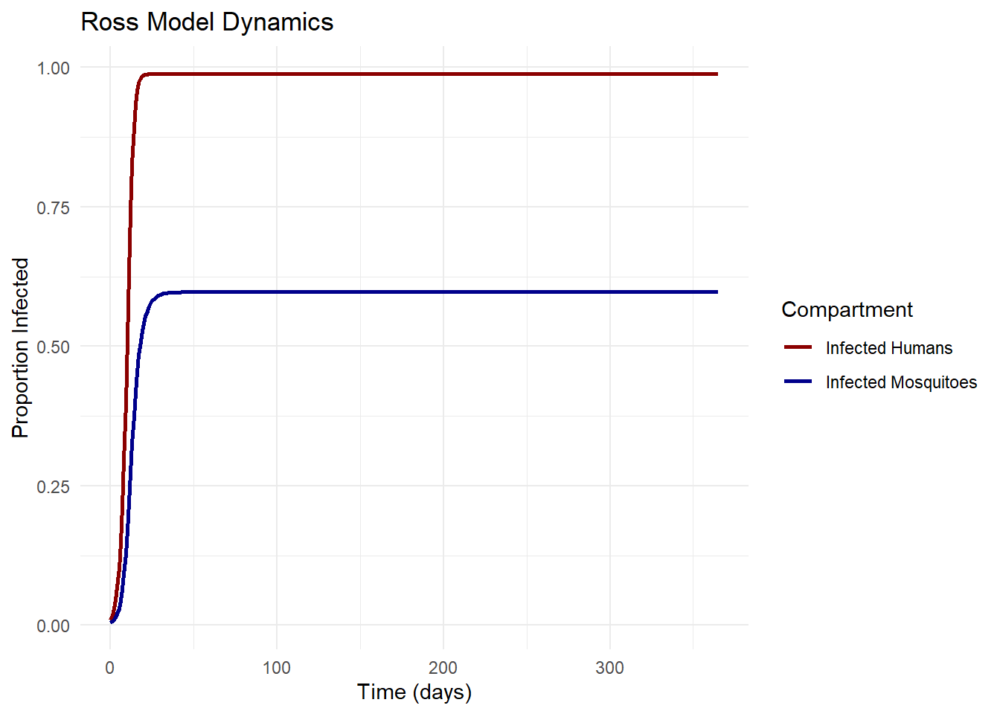

The Ross-Macdonald Framework: Foundational Mathematical Models in Vector-Borne Disease Epidemiology
Author
Jong-Hoon Kim
Published
April 17, 2025
1 Introduction
The mathematical modeling of infectious diseases has become an indispensable tool in modern epidemiology, guiding intervention strategies and policy decisions. While contemporary models exhibit increasing complexity, many fundamental principles trace back to the pioneering work of Sir Ronald Ross, who established the theoretical foundation for understanding vector-borne disease transmission dynamics at the turn of the 20th century.
This article examines Ross’s seminal contributions to mathematical epidemiology, the subsequent refinements by George Macdonald, and how these models continue to influence contemporary approaches to vector-borne disease control. We will focus on the mathematical formulations that undergird the Ross-Macdonald framework and their implications for disease control thresholds.
2 Ross’s Initial Mathematical Framework
After establishing the mosquito-malaria parasite life cycle, for which he received the Nobel Prize in Medicine in 1902, Ronald Ross turned his attention to developing mathematical models to guide control strategies. His first models, published in 1908 in “Report on the Prevention of Malaria in Mauritius” (Ross 1908) and expanded in his 1911 book “The Prevention of Malaria” (Ross 1911), represented a paradigm shift in epidemiological thinking.
Ross later formalized these mathematical principles in his landmark papers “Some a priori pathometric equations” (Ross 1915) and “An application of the theory of probabilities to the study of a priori pathometry” (Ross 1916), which laid the groundwork for the entire field of mathematical epidemiology.
Ross’s initial model was remarkably straightforward yet profound. If we denote the proportion of infected humans as \(p\) and the proportion of infected mosquitoes as \(P\), his first model can be expressed as:
Where: - \(a\) represents the mosquito biting rate - \(b\) is the probability of parasite transmission from mosquito to human per bite - \(c\) is the probability of parasite transmission from human to mosquito per bite - \(m\) is the mosquito density per human - \(r\) is the human recovery rate - \(\mu\) is the mosquito mortality rate
3 The Basic Reproduction Number
Ross’s most significant contribution was demonstrating that malaria transmission could be interrupted without eliminating the entire vector population (Smith et al. 2007). This led to the concept of a critical threshold, later formalized as the basic reproduction number \(R_0\).
For Ross’s model, \(R_0\) can be derived as:
\[R_0 = \frac{a^2bcm}{\mu r}\]
This quantity represents the expected number of secondary infections arising from a single infected individual in a completely susceptible population. When \(R_0 < 1\), the disease will eventually die out; when \(R_0 > 1\), the disease can persist in the population (Smith et al. 2012).
Code
# Function to calculate R0 from model parameterscalculate_R0 <-function(a, b, c, m, mu, r) { R0 <- (a^2* b * c * m) / (mu * r)return(R0)}# Example parameter valuesa <-0.3# Biting rate (bites per day)b <-0.5# Transmission probability: mosquito to humanc <-0.5# Transmission probability: human to mosquitom <-10# Mosquito density per humanmu <-0.1# Mosquito mortality rater <-0.01# Human recovery rateR0 <-calculate_R0(a, b, c, m, mu, r)cat("With these parameters, R0 =", round(R0, 2))
With these parameters, R0 = 225
4 The Macdonald Refinements
George Macdonald expanded Ross’s work in the 1950s, incorporating additional biological complexity (Macdonald 1952). His key modifications included:
Accounting for the latent period in the mosquito (\(n\) days), during which the parasite develops
Recognition of mosquito survival as exponential, with daily survival probability \(p\)
Macdonald’s version of the reproduction number became:
\[R_0 = \frac{ma^2bcp^n}{-r\ln(p)}\]
Where \(-\ln(p)\) replaces \(\mu\) as the mosquito mortality rate.
A crucial insight from Macdonald was that malaria transmission is particularly sensitive to adult mosquito longevity, as expressed by the exponent \(n\) in the equation. This led to the strategic emphasis on adult mosquito control using residual insecticides (Garrett-Jones 1964).
Code
# Macdonald's R0 calculationcalculate_macdonald_R0 <-function(m, a, b, c, p, n, r) { R0 <- (m * a^2* b * c * p^n) / (-r *log(p))return(R0)}# Example parameter valuesm <-10# Mosquito density per humana <-0.3# Biting rate (bites per day)b <-0.5# Transmission probability: mosquito to humanc <-0.5# Transmission probability: human to mosquitop <-0.9# Daily mosquito survival probabilityn <-10# Extrinsic incubation period (days)r <-0.01# Human recovery ratemacdonald_R0 <-calculate_macdonald_R0(m, a, b, c, p, n, r)cat("With Macdonald's formulation, R0 =", round(macdonald_R0, 2))
With Macdonald's formulation, R0 = 74.46
5 Equilibrium Analysis and Threshold Conditions
Ross’s mathematical analysis demonstrated that the system has two equilibrium points (Bailey 1982):
The stability of these equilibria depends on the value of \(R_0\). When \(R_0 < 1\), the disease-free equilibrium is stable and the endemic equilibrium doesn’t exist. When \(R_0 > 1\), the disease-free equilibrium is unstable and the endemic equilibrium is stable (Dietz, Molineaux, and Thomas 1974).
Code
# Simple SIS model with vector-host interactionross_model <-function(time, state, parameters) {with(as.list(c(state, parameters)), { dp_dt <- a * b * m * P * (1- p) - r * p dP_dt <- a * c * p * (1- P) - mu * Preturn(list(c(dp_dt, dP_dt))) })}# Parameter valuesparams <-c(a =0.3, # Biting rateb =0.5, # Transmission probability: mosquito to humanc =0.5, # Transmission probability: human to mosquitom =10, # Mosquito density per humanr =0.01, # Human recovery ratemu =0.1# Mosquito mortality rate)# Initial conditionsinit_state <-c(p =0.01, P =0.005)# Time pointstimes <-seq(0, 365, by =1)# Solve the modelsolution <-ode(y = init_state, times = times, func = ross_model, parms = params)# Convert to data frameresults <-as.data.frame(solution)results_long <-pivot_longer(results, cols =c(p, P), names_to ="Compartment", values_to ="Proportion")# Plotggplot(results_long, aes(x = time, y = Proportion, color = Compartment)) +geom_line(size =1) +scale_color_manual(values =c("p"="darkred", "P"="darkblue"),labels =c("p"="Infected Humans", "P"="Infected Mosquitoes")) +labs(title ="Ross Model Dynamics",x ="Time (days)",y ="Proportion Infected") +theme_minimal()

6 Vector Control Implications
The Ross-Macdonald framework provides clear guidance on vector control strategies. From the expression for \(R_0\), we can derive critical thresholds for various control parameters (Smith et al. 2014). For example, the critical mosquito density \(m_c\) below which transmission cannot be sustained is:
\[m_c = \frac{\mu r}{a^2bc}\]
Similarly, the required efficacy of insecticides to achieve control can be calculated. If we denote the proportional reduction in mosquito density as \(\Delta m\), then for disease elimination:
\[\Delta m > 1 - \frac{1}{R_0}\]
This concept is directly related to the herd immunity threshold in direct transmission diseases (Fine 1993).
Critical mosquito density (m_c) = 0.04 mosquitoes per human
Code
# Calculate required control effectivenessrequired_control <-1- (1/R0)cat("Required proportional reduction in mosquito density =", round(required_control, 4) *100, "%")
Required proportional reduction in mosquito density = 99.56 %
7 Sensitivity Analysis
A key insight from the Ross-Macdonald framework is the differential sensitivity of \(R_0\) to various parameters. This can be formally analyzed through partial derivatives or elasticity analysis (Brady et al. 2016).
For example, the elasticity of \(R_0\) with respect to parameter \(\theta\) is:
For the mosquito mortality rate \(\mu\), this becomes:
\[E_{\mu} = -1\]
This indicates that a 1% increase in mosquito mortality leads to approximately a 1% decrease in \(R_0\).
For the parameter \(a\) (biting rate), the elasticity is:
\[E_a = 2\]
This reflects Macdonald’s important observation that interventions targeting mosquito biting behavior have a squared effect on transmission, since \(a\) appears as \(a^2\) in the \(R_0\) expression (Smith et al. 2012).
Code
# Function to calculate elasticity for different parameterscalculate_elasticities <-function(a, b, c, m, mu, r) { E_a <-2# Elasticity for biting rate E_b <-1# Elasticity for transmission probability (mosquito to human) E_c <-1# Elasticity for transmission probability (human to mosquito) E_m <-1# Elasticity for mosquito density E_mu <--1# Elasticity for mosquito mortality rate E_r <--1# Elasticity for human recovery rate elasticities <-data.frame(Parameter =c("Biting rate (a)", "Transmission: mosquito→human (b)", "Transmission: human→mosquito (c)", "Mosquito density (m)","Mosquito mortality (μ)", "Human recovery rate (r)"),Elasticity =c(E_a, E_b, E_c, E_m, E_mu, E_r) )return(elasticities)}elasticities <-calculate_elasticities(a, b, c, m, mu, r)elasticities
Spatial heterogeneity: Incorporating spatial structure and human mobility
Stochasticity: Accounting for random events, particularly important near elimination
Vector bionomics: More detailed entomological parameters
Immunity dynamics: Accounting for acquired immunity in human populations
Drug resistance: Modeling the spread of antimalarial resistance
The mathematical expression for \(R_0\) in these more complex models becomes correspondingly more intricate. For example, in a spatial metapopulation model with \(n\) patches, \(R_0\) can be expressed as the dominant eigenvalue of the next-generation matrix:
\[R_0 = \rho(FV^{-1})\]
Where \(F\) represents new infections and \(V\) represents transitions between compartments.
9 Practical Applications in Disease Control Programs
The threshold concept derived from Ross’s work remains central to modern malaria control programs (Smith et al. 2007). The World Health Organization’s Global Technical Strategy for Malaria 2016-2030 implicitly relies on these mathematical principles when setting targets for vector control coverage and intervention effectiveness.
Key applications include:
Indoor residual spraying (IRS): Targeting the adult mosquito longevity parameter
Insecticide-treated nets (ITNs): Affecting both mosquito mortality and biting rate
Larval source management: Reducing the mosquito density parameter \(m\)
Mathematical models help quantify the coverage levels required for these interventions to bring \(R_0\) below 1 (Brady et al. 2016).
10 Discussion
Ross’s mathematical insights have withstood the test of time remarkably well. The threshold concept, formalized as \(R_0\), remains central to infectious disease epidemiology across all pathogens, not just vector-borne diseases.
Modern computational capabilities allow for increasingly complex simulations, but the core mathematical principles established by Ross (Ross 1911) and refined by Macdonald (Macdonald 1952) continue to guide our understanding of transmission dynamics. The elegance of these models lies in their ability to capture essential dynamics with relatively simple formulations.
As we face challenges like climate change, insecticide resistance, and drug resistance, these mathematical frameworks are being adapted to address increasingly complex scenarios (Smith et al. 2014). Yet the threshold principle - that disease transmission can be interrupted without eliminating every vector - remains a profound insight that continues to guide public health strategies worldwide.
11 References
Bailey, Norman TJ. 1982. “The Biomathematics of Malaria.”Mathematics in Medicine and Biology 2 (4).
Brady, Oliver J, H Charles J Godfray, Andrew J Tatem, Peter W Gething, Justin M Cohen, F Ellis McKenzie, T Alex Perkins, et al. 2016. “Vectorial Capacity and Vector Control: Reconsidering Sensitivity to Parameters for Malaria Elimination.”Transactions of the Royal Society of Tropical Medicine and Hygiene 110 (2): 107–17. https://doi.org/10.1093/trstmh/trv113.
Dietz, Klaus, Louis Molineaux, and Anthony Thomas. 1974. “A Malaria Model Tested in the African Savannah.”Bulletin of the World Health Organization 50 (3-4): 347–57.
Garrett-Jones, C. 1964. “Malaria Eradication and Control from a Global Standpoint.”Journal of Medical Entomology 1 (4): 353–65.
Macdonald, George. 1952. “The Analysis of Equilibrium in Malaria.”Tropical Diseases Bulletin 49 (9): 813–29.
Mandal, Sandip, Ram Rup Sarkar, and Somdatta Sinha. 2011. “Mathematical Models of Malaria-a Review.”Malaria Journal 10 (1): 1–19. https://doi.org/10.1186/1475-2875-10-202.
Reiner, Robert C, T Alex Perkins, Christopher M Barker, Tianchan Niu, Luis Fernando Chaves, Alicia M Ellis, Dylan B George, et al. 2013. “A Systematic Review of Mathematical Models of Mosquito-Borne Pathogen Transmission: 1970–2010.”Journal of the Royal Society Interface 10 (81): 20120921. https://doi.org/10.1098/rsif.2012.0921.
Ross, Ronald. 1908. Report on the Prevention of Malaria in Mauritius. London: Waterlow & Sons Limited.
———. 1911. The Prevention of Malaria. London: John Murray.
———. 1915. “Some a Priori Pathometric Equations.”British Medical Journal 1 (2830): 546–47.
———. 1916. “An Application of the Theory of Probabilities to the Study of a Priori Pathometry. Part i.”Proceedings of the Royal Society of London. Series A 92 (638): 204–30.
Smith, David L, Katherine E Battle, Simon I Hay, Christopher M Barker, Thomas W Scott, and F Ellis McKenzie. 2012. “Ross, Macdonald, and a Theory for the Dynamics and Control of Mosquito-Transmitted Pathogens.”PLOS Pathogens 8 (4): e1002588. https://doi.org/10.1371/journal.ppat.1002588.
Smith, David L, F Ellis McKenzie, Robert W Snow, and Simon I Hay. 2007. “Revisiting the Basic Reproductive Number for Malaria and Its Implications for Malaria Control.”PLOS Biology 5 (3): e42. https://doi.org/10.1371/journal.pbio.0050042.
Smith, David L, T Alex Perkins, Robert C Reiner, Christopher M Barker, Tianchan Niu, Luis Fernando Chaves, Alicia M Ellis, et al. 2014. “Recasting the Theory of Mosquito-Borne Pathogen Transmission Dynamics and Control.”Transactions of the Royal Society of Tropical Medicine and Hygiene 108 (4): 185–97. https://doi.org/10.1093/trstmh/tru026.